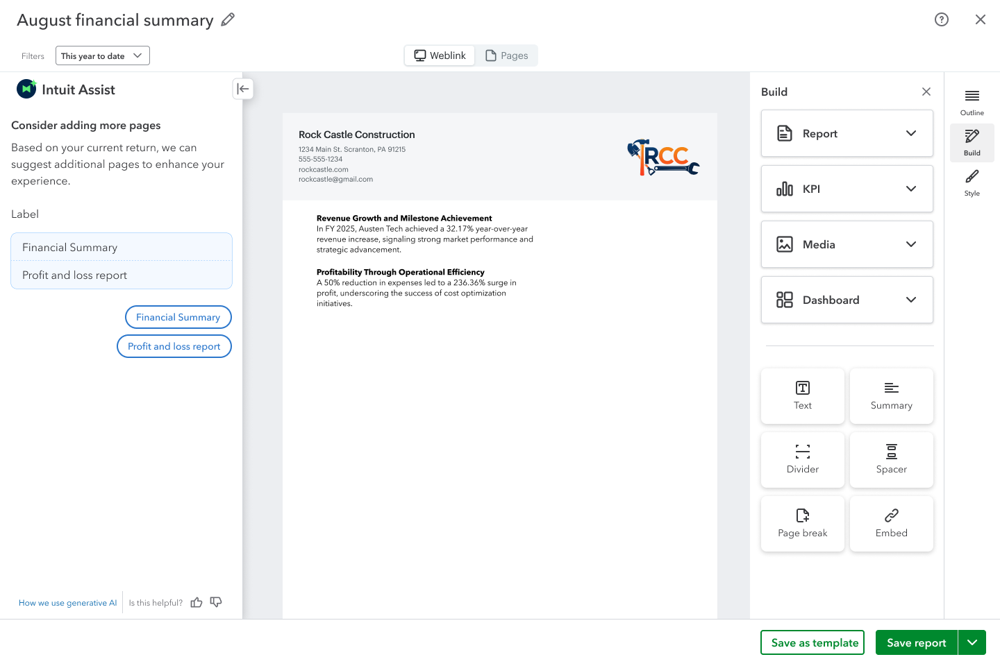
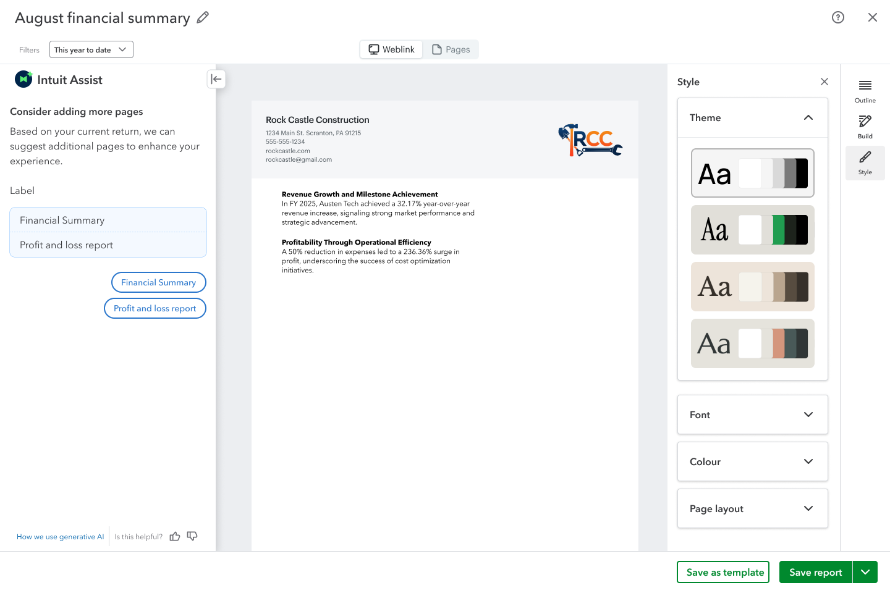

Quality with less effort.
Build accurate, high-quality reports with minimal effort.

More flexibility.
Less repeated effort.
I led the next-generation reporting experience, introduced alongside legacy. The goal: quality, data flexibility and repeat use.
01 · The starting point
Legacy Management Reports was reusable, but offered limited customization. Usage was low; customers wanted more control over the data and presentation.
Our goal was a more flexible experience, not a fresh start for management reporting in QuickBooks.
Start within legacy Management Reports
Add interpretation manually
Prepare the report for clients
Update the narrative for the next cycle
Broad July brief. Fixed November target. A coherent next version, not just a longer feature list.
02 · Customer needs
Build accurate, high-quality reports with minimal effort.
Bring in the data I want, with the flexibility to shape my report.
Let my setup carry forward, so recurring reporting scales with my work.
How could we give customers more flexibility without making every reporting cycle more work?
Customer needs and design goals, not measured accuracy or productivity gains.
03 · Decision 01 / Product model
I used the vision prototype and lifecycle to align leadership, product and engineering on one experience and its dependencies.
Long-term product model, not a shipped-feature checklist. First-release focus refers to the stage; individual capabilities follow the 2025 release plan.
Invite and review were deferred; individual finalization remained in the first-release sequence. Starting with an AI prompt and interactive HTML are shown as vision capabilities, not confirmed November scope.
2025 delivery sequence. This describes the project at launch, not current feature availability.
The lifecycle connected the customer job to release planning. Collaboration could leave the first release without disappearing from the product direction.
04 · Decision 02 / Authoring
I consolidated specialized text components into one block, with hierarchy and formatting applied after insertion.
Early inventory
Simplified model
Executive summary
Formatting illustration, not the product interface. Try the controls.
Fewer component behaviors; formatting remains a customer choice.
Product capability model
Five peer groups connect the customer job to the product and technical scope.
Text, tables, KPI, media
Sections, links
AI prompts, summaries, highlights, insights
Theme, font, color, layout
Reports, dashboards, embeds
One connected reporting experience.Grouped capabilities, not steps in a sequence.


Early Build and Style explorations, not finished customer reports or a complete record of the November release.
Moderated and unmoderated studies ran through vision, builder refinement, and implementation. Specific participant counts, quotes, and decision-changing observations are not included here; no causal research result is claimed for the component change.
The experience
Financial evidence and interpretation share one canvas, with KPI customization alongside the document.
Financial charts and tables share the report canvas.
KPI header, hero-number, and color controls sit beside the document.
Preview, Save draft, and Publish remain visible in the workspace.
05 · Decision 03 / Scope and transition
I worked with product and engineering to protect the authoring foundation, then sequence the rest around dependencies and quality.
Create, compose, style and publish.
Moved from November for bug fixes.
Two experiences coexisted. This is not a claim of completed migration.
I led the vision, product model, research, and experience design, and worked through release tradeoffs with partners. Shipping was a cross-functional team outcome.
06 · Usage and next questions
Customers saved and distributed reports. Whether the new experience improves adoption and recurring use remains an open question.
Activity reaches saving and distribution.
No verified time, accuracy, retention or adoption lift versus legacy.
The separate company view displays stage ratios of 9% from listing to start, 32% from start to created, and 60% from created to distribution. These raise questions about beginning and reaching a saved report.
They are dashboard stage ratios, not verified sequential-cohort conversion rates. Whole-period company deduplication and stage membership need confirmation before using them as customer completion or adoption claims.
How do more customers reach a useful first report—and return for the next cycle?
These are next-step questions, not completed experiments or measured improvements.
Usage: the all-months dashboard selector spans October 2025 to September 2026. September is partial at the snapshot date. Activity may include work before and after the initial November release and is not attributable solely to my design or that release. The two exports are event and company views, not a before-and-after comparison.
Comparison: legacy usage was described qualitatively as low. A matched legacy baseline, eligible audience, customer completion cohort, and repeat-use measures are not available here. Accuracy, quality, flexibility, and productivity remain customer goals rather than quantified improvements.
Release: November and December milestones describe the 2025 project narrative. Exact capability-level November scope is not fully verified. Roadmap labels in the lifecycle refer to that plan, not present-day availability.
Visual evidence: Build and Style are early explorations. The editor image is a product screen, not a finished customer report. A matched comparison of the generated legacy and new reports is not yet included.